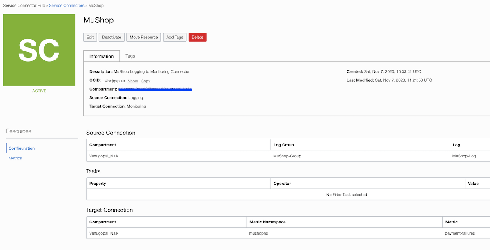

Setup
Introduction
In this section we will deploy MuShop, Oracle Cloud Infrastructure (OCI) Notifications, Logging and Service Connector Hub.
Deploy MuShop
-
Perform just the Setup instructions from here MuShop Setup
-
Deploy
cd deploy/complete/kuberneteskubectl -n mushop apply -f mushop.yamlWait for services to be Ready
kubectl get pod --watch --namespace mushop -
Expose
Oracle Cloud Infrastructure (OCI) Notifications
-
Navigate to
Application Integration -> Notifications -> Create Topic -
Navigate to your Topic and
Create Subscription -> Email -
Add you Email and create. The Email subscription will change to pending state.
Sample Email you receive would look like this:
You have chosen to subscribe to the topic: Mushop-Topic (Topic OCID: ocid1.onstopic.oc1.phx.xxx)
To confirm this subscription, click or visit the link below (If this was in error, you can ignore this message): Confirm subscription
– Please do not reply directly to this email. If you have any questions or comments regarding this email, contact > your account administrator.
Once you confirm the subscription it changes to Active state.
Oracle Cloud Infrastructure (OCI) Logging
The Oracle Cloud Infrastructure (OCI) Logging service is a highly scalable and fully managed single pane of glass for all the logs in a tenancy.
In this section we will be enabling OCI (Oracle Cloud Infrastructure) logging for OKE (Oracle Cloud Infrastructure Container Engine for Kubernetes) worker nodes.
All the OKE pod logs (stdout and stderr) are written to /var/log/containers in a JSON format by default.
Example:
Log File Name Format: <Pod>_<NameSpace>_<ContainerName>-<ContainerID>.log
Log File Content Format: {"log":"<message>","stream":"<stdout|stderr>","time":"<timestamp>"}
- Create a Dynamic Group
Create a dynamic group and add your worker nodes.
Navigate to Identity -> Dynamic Groups -> Create Dynamic Group
Name: <DynamicGroupName>
Description: <DynamicGroupDescription>
Matching Rules: any {instance.compartment.id = 'CompartmentOCID'}
- Create a IAM Policy
Navigate to Identity -> Policies -> Create Policy
Name: <PolicyName>
Description: <PolicyDescription>
Policy Versioning: Keep version current
Statement: allow dynamic-group <DynamicGroupName> to use log-content in tenancy
- Enable Logging
To enable Logging on OKE, perform the following actions:
- Create a Log Group - This is a logical container for organizing logs, Identity and Access Management (IAM) policies can control who has access to a Log Group.
- Create a Custom Log - The Custom Log will contain all information that is uploaded by the Agent Configuration.
- Create an Agent Configuration - Defines the Source Log location and relevant Parsers along with the Dynamic Group containing all the Instance to which the configuration should apply.
- Create a Log Group
Navigate to Logging -> Log Groups -> Create Log Group
Compartment: <SelectCompartment
Name: <LogGroupName>
Description: <LogGroupDescription>
- Create a Custom Log
Navigate to Logging -> Logs -> Create Custom Log
Custom Log Name: <CustomLogName>
Compartment: <SelectCompartment>
Log Group: <SelectLogGroup>
Show Additional Option:
Select Log Retention: 1, 2, 3, 4, 5 or 6 months
- Create Agent Configuration
Navigate to Logging -> Agent Configurations -> Create Agent Config
Configuration Name: <ConfigurationName>
Compartment: <SelectCompartment>
Group Type: Dynamic Group
Group: <SelectDynamicGroup>
Configure Log Inputs:
Input Type: Log Path
Input Name: <InputName>
File Paths: /var/log/containers/*.log
Advanced Parser Options:
Parser: JSON
Time Format: %Y-%m-%dT%H:%M:%S.%NZ
Select Log Destination:
Compartment: <SelectCompartment>
Log Group: <SelectLogGroup>
Log Name: <SelectLogName>

- Verify the fluentd.conf
ssh into worker node where the mushop-orders pod is running
kubectl -n mushop get pods,nodes -o wide
ssh opc@<IP_OF_WORKER_NODE>
cat /etc/unified-monitoring-agent/conf.d/fluentd_config/fluentd.conf
Example output:
worker-node-1$ cat /etc/unified-monitoring-agent/conf.d/fluentd_config/fluentd.conf
<source>
@type tail
tag 677561.varlogcontainers
path /var/log/containers/*.log
pos_file /etc/unifiedmonitoringagent/pos/677561-varlogcontainers.pos
path_key tailed_path
<parse>
@type json
time_type string
time_format %Y-%m-%dT%H:%M:%S.%NZ
</parse>
</source>
<match 677561.**>
@type oci_logging
log_object_id ocid1.log.oc1.phx.xxxx
<buffer tag>
@type file
retry_timeout 3h
path /opt/unifiedmonitoringagent/run/buffer/677561
disable_chunk_backup true
chunk_limit_size 5MB
flush_interval 180s
total_limit_size 1GB
overflow_action throw_exception
retry_type exponential_backoff
</buffer>
</match>
If you dont see your defined agent config then wait for few more minutes for the agent config to get uploaded onto the worker nodes. Impatient users can restart the unified-monitoring-agent_config_downloader.timer service to download the config immediately.
Oracle Cloud Infrastructure (OCI) Service Connector Hub
Service Connector Hub orchestrates data movement between services in Oracle Cloud Infrastructure.
Data is moved using service connectors. A service connector specifies the source service that contains the data to be moved, tasks to run on the data, and the target service for delivery of data when tasks are complete.
In this case, we are filtering “Payment declined” messages and sending out the metrics to OCI Monitoring on a custom metric named “payment-declined”.
Navigate to Logging -> Service Connectors -> Create Connector
Name: <Service Connector Name>
Description: <Service Connector Description>
source: Logging
target: Monitoring
Switch to Advanced mode:
search "ocid1.compartment.oc1..xxxx/ocid1.loggroup.oc1.phx.xxxx/ocid1.log.oc1.phx.xxxx" | logContent='*Payment declined*' and subject='/var/log/containers/*_mushop_*.log'
metricnamespace: <CustomMetricNameSpace>
metric: <CustomMetricName>
